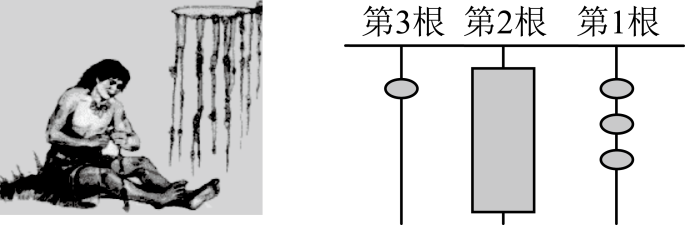
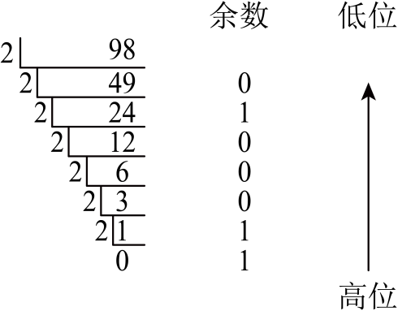
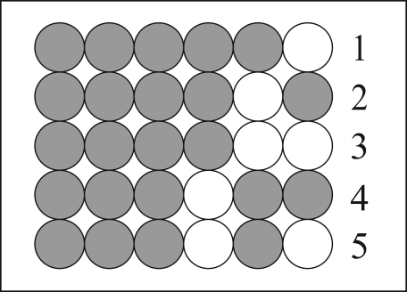
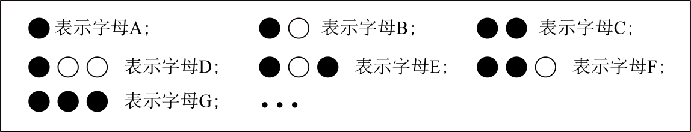
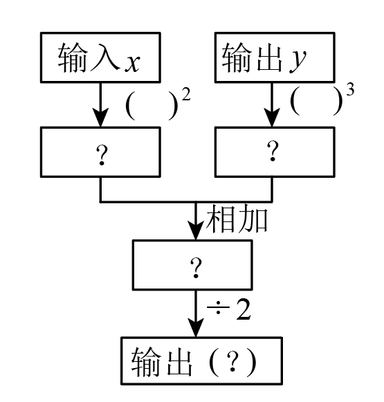
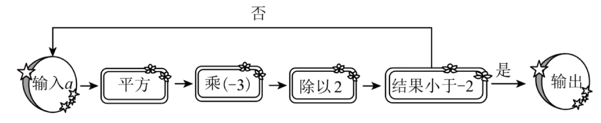
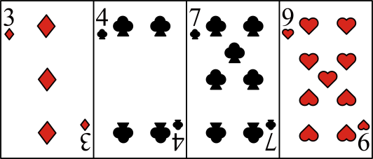

专题2.6 有理数的乘方、有理数的混合运算（举一反三讲义）
【北师大版2024】

【题型1 有理数幂的概念】 2
【题型2 有理数的乘方运算】 3
【题型3 有理数乘方的逆运算】 5
【题型4 乘方运算的符号规律】 7
【题型5 乘方的应用】 8
【题型6 有理数的混合运算】 10
【题型7 有理数混合运算的实际应用】 12
【题型8 程序流程图与有理数的计算】 16
【题型9 计算“24”点】 20
【题型10 乘方中的规律探究】 22
 知识点1 有理数的乘方
知识点1 有理数的乘方
1. 一般地，n个相同的乘数ɑ相乘，即a⋅a·⋯·an个，记作an．求n个相同乘数的积的运算，叫作乘方，乘方的结果叫作幂．
2. an中，a叫作底数，n叫作指数，an读作a的n次方（或a的n次幂）．
乘方运算的结果及符号的规律
正数：正数的任何次幂都是正数负数：负数的奇次幂是负数负数的偶次幂是正数 0：0的任何正整数次幂都是0
知识点2 有理数的混合运算顺序
1. 先乘方，再乘除，最后加减；
2. 同级运算，从左到右进行；
3. 如有括号，先做括号内的运算，按小括号、中括号、大括号依次进行．
有理数运算分三级，加减是第一级运算，乘除是第二级运算，乘方是第三级运算．运算顺序是先算高级，再算低级；同级运算按从左到右的顺序进行；对于含有多重括号的运算，一般先算小括号内的，再算中括号内的，最后算大括号内的．
【题型1 有理数幂的概念】
【例1】（2024·河北沧州·模拟预测）若23+23+23+....+23k个23=2m（k>1，k,m都为正整数 ，则m的最小值为（ ）
，则m的最小值为（ ）
A．3 B．4 C．6 D．9
【答案】B
【分析】本题主要考查数字的变化规律，解答的关键是是理解题意，明确幂的形式．根据所给的式子的特点，结合幂的运算的相应的法则进行分析即可．
【详解】
解：23+23+23+....+23k个23=2m（k>1，k,m都为正整数∴23k=2m，
则k是可以转为以2为底数的幂的形式的数，
∴k的最小值为：2=21，
∴23×2=2m，
∴m=4，
∴m的最小值为：4
故选：B
【变式1-1】（22-23七年级上·江西宜春·阶段练习）-23 的底数是 指数是 表示 ．
【答案】 2 3 2的3次方的相反数/23的相反数
【分析】根据乘方的定义，an中，a是底数，n是指数，an是幂．
【详解】解：根据乘方的概念，则-23的底数是2，指数是3，表示2的3次方的相反数．
故答案为2；3；2的3次方的相反数．
【点睛】此题考查了有理数的乘方的概念，注意−23和−23的区别，前者底数是2，后者底数是−2，正确区分乘方运算的底数是解题的关键．
【变式1-2】（2024七年级上·全国·专题练习）下列说法正确的有（ ）
①没有平方得−9的数；②−a2是负数；③m+d2是正数；④任何一个小于1的数都大于它的平方．
A．1个 B．2个 C．3个 D．4个
【答案】A
【分析】本题考查有理数的乘方，以及正负数的概念，对于①，根据一个数的平方是非负数进行判断；对于②、③，根据零的平方是零，零既不是正数也不是负数，据此分析；对于④，根据负数的平方是正数，负数小于正数，即可举例作出判断.
【详解】解：没有平方得−9的数，①正确；
a=0时，−a2=0，不是负数，②错误；
m+d=0时，m+d2=0，不是正数，③错误；
−12=1，−1<1，④错误．
综上所述，正确的有1个，
故选：A．
【变式1-3】（24-25七年级上·河北唐山·期末）3+3+3+⋅⋅⋅+3m个+2×2×2×⋅⋅⋅×2n个的结果可表示为（ ）
A．3m+2n B．m3+2n C．3m+2n D．3m+2n
【答案】D
【分析】本题主要考查了用代数式表示数，有理数幂等知识，先得出m个3相加表示为3m，n个2相乘表示为2n，然后相加即可得出答案．
【详解】解：m个3相加表示为：3m，n个2相乘表示为2n，
故3+3+3+⋅⋅⋅+3m个+2×2×2×⋅⋅⋅×2n个的结果可表示为3m+2n，
故选：D．
【题型2 有理数的乘方运算】
【例2】（24-25七年级上·山东济宁·期中）比较大小：−233 −322（填>或<）．
【答案】<
【分析】本题考查了有理数的大小比较， 1、在数轴上表示的两个数，右边的总比左边的数大．2、正数都大于零，负数都小于零，正数大于负数．3、两个正数比较大小，绝对值大的数大；两个负数比较大小，绝对值大的数反而小．
先计算各数，再利用有理数大小的比较方法比较即可．
【详解】解：−233=−83，−322=−94，
∵−83>−94，
∴−83<−94，
∴ −233<−(32)2．
故答案为：<．
【变式2-1】（2025·福建泉州·二模）已知x−20252+y+1=0，则yx的值是 ．
【答案】−1
【分析】本题主要考查了非负数的性质，代数式求值，根据非负性的性质得到x−2025=0，y+1=0，据此求出x、y的值即可得到答案．
【详解】解：∵x−20252+y+1=0，x−20252≥0，y+1≥0，
∴x−20252=y+1=0，
∴x−2025=0，y+1=0，
∴x=2025，y=−1，
∴yx=−12025=−1，
故答案为：−1．
【变式2-2】（24-25七年级上·上海闵行·期中）计算：−1411×166= ．
【答案】−4
【分析】本题考查有理数的乘方运算，先将16化为42，根据幂的乘方将原式化为−1411×412，再根据同底数幂的乘法的逆运算转化为−1411×411×4，然后根据积的乘方的逆运算转化为−14×411×4，即可得解．掌握相应的运算法则的逆运算是解题的关键．
【详解】解：−1411×166
=−1411×426
=−1411×412
=−1411×411×4
=−14×411×4
=−111×4
=−1×4
=−4．
故答案为：−4．
【变式2-3】（24-25七年级上·广东广州·期末）利用二进制数加法运算法则计算110102+1112，并把计算结果转化为十进制数是 ．
【答案】33
【分析】本题考查了二进制数的加法运算，二进制数转化为十进制数，先根据二进制数加法运算法则求出结果，再根据二进制数转化为十进制数的运算法则计算即可求解，掌握相关运算法则是解题的关键．
【详解】解：∵110102+1112=1000012，
∴计算结果转化为十进制数是1×25+0×24+0×23+0×22+0×21+1×20=32+1=33，
故答案为：33．
【题型3 有理数乘方的逆运算】
【例3】（2025·四川广安·模拟预测）一般地，n个相同的因数a相乘a⋅a⋅a⋅a⋯⋅a记作an，如2×2×2=23=8．此时，3叫做以2为底的8的“劳格数”，记为L28，则L28=3．一般地，若an=b（a>0且a≠1），则n叫做以a为底的b的“劳格数”，记为Lab=n，如34=81，则4叫做以3为底的81的“劳格数”，记为L3(81)=4．则L39,L327,L3243满足关系式 ．
【答案】L39+L327=L3243
【分析】本题考查了有理数乘方，计算出L39=2，L327=3，L3243=5，即可解答，数熟练计算是解题的关键．
【详解】解：∵32=9,33=27,35=243，
∴L39=2，L327=3，L3243=5，
∴L39+L327=L3243，
故答案为：L39+L327=L3243．
【变式3-1】（22-23七年级上·广东东莞·期中）62=36,2×32=22×32=4×9=36，由此你能算出236×1233=（ ）
A．6 B．8 C．18 D．十分麻烦
【答案】B
【分析】先把原式变形为233×1233×23，从而得到2×1233×23，即可求解．
【详解】解：236×1233
=233×23×1233
=233×1233×23
=2×1233×23
=133×23
＝1×8
＝8
故选：B．
【点睛】本题主要考查了有理数乘方运算，掌握有理数乘方的意义是解题的关键．
【变式3-2】（22-23七年级上·山东青岛·阶段练习）已知|a|=2,b2=25,3c=27，且ab>0，则a−b+c的值为（ ）
A．10 B．6 C．3 D．6或者0
【答案】D
【分析】先求出a，b，c的值，然后分2种情况代入计算即可．
【详解】解：∵a=2，
∴a=2或a=−2．
∵b2=25，
∴b=5或b=−5．
∵ab>0，
∴当a=2时，b=5或当a=−2时，b=−5．
∵3c=27，
∴c=3．
当a=2，b=5，c=3时，
原式=2−5+3=0．
当a=−2，b=−5，c=3时，
原式=−2+5+3=6．
故选D．
【点睛】本题考查了乘方的意义，绝对值的意义，求代数式的值，分类讨论是解答本题的关键．
【变式3-3】（22-23七年级上·福建厦门·期中）若126×38=p，则126×36的值可以表示为（ ）
A．16p B．p−9 C．p−6 D．19p
【答案】D
【分析】本题考查了有理数的乘方，乘方的逆运算，等式的性质等知识点，根据有理数乘方的运算法则即可得解，熟练掌握有理数的乘方的意义是解题关键．
【详解】∵126×38=p,
∴126×36×32=p,
∴126×36×9=p,
∴126×36=19p，
故选：D．
【题型4 乘方运算的符号规律】
【例4】（23-24七年级上·广东揭阳·期末）计算： −11+−12+−13+⋯+−110=
【答案】0
【分析】本题考查了有理数的加法运算，有理数的乘方，根据有理数的乘方找到规律，计算即可．
【详解】解：原式=−1+1+−1+⋯+1
=0，
故答案为：0．
【变式4-1】（23-24七年级上·河南信阳·期中）在−12021，−23，−711，0中，非负数有（ ）
A．1个 B．2个 C．3个 D．4个
【答案】A
【分析】本题考查有理数乘方中的符号问题，判断每个数的正负号即可求解．
【详解】解：∵−12021=−1<0，−23<0，−711=−711<0，
∴−12021，−23，−711，0中，只有0是非负数．
故选：A．
【变式4-2】（24-25七年级上·四川南充·期中）已知y=−(x−6)4+2024的最大值为 ．
【答案】2024
【分析】本题考查乘方的非负性．熟练乘方的非负性是解题的关键．
根据乘方的非负性，确定最大值即可．
【详解】解：∵(x−6)4≥0，
∴−(x−6)4≤0
∴−(x−6)4+2024≤2024，
∴y=−(x−6)4+2024的最大值为：2024；
故答案为：2024．
【变式4-3】（23-24七年级上·河南漯河·阶段练习）当整数n为 时，(−1)n=−1；若n是正整数，则(−1)n+(−1)n+1= ．
【答案】 奇数 0
【分析】−1的奇次方为−1，−1的偶次方为1；再分类讨论即可得到答案．
【详解】解：当整数n为奇数时，(−1)n=−1；
当整数n为奇数时，则n+1为偶数，
∴(−1)n+(−1)n+1=−1+1=0，
当整数n为偶数时，则n+1为奇数，
(−1)n+(−1)n+1=1−1=0；
故答案为：奇数，0
【点睛】本题考查的是负1的奇次方与偶次方，熟记乘方的含义与乘方的符号确定方法是解本题的关键．
【题型5 乘方的应用】
【例5】（24-25七年级上·江苏宿迁·期中）根据我国古代《易经》记载，远古时期人们通过在绳子上打结来记录数量，即“结绳记数”．如图，一位妇女在从右到左依次排列的绳子上打结，满七进一，用来记录采集到的野果的个数．已知她一共采集到的野果数不少于75个，则她在第2根绳子上打结的可能情况有（ ）

A．1种 B．2种 C．3种 D．4种
【答案】C
【分析】本题考查了含乘方的有理数的混合运算，以古代“结绳计数”为背景，按满七进一计数，根据图中的数学列式计算即可．
【详解】解：根据题意得，75−1×72+37=3⋯⋯2，
因此有4，5，6三种可能的情况，
故选：C．
【变式5-1】（24-25七年级上·江苏宿迁·期中）一根1米长的绳子，第一次剪去一半，第二次剪去剩下的一半，如此下去，第6次后剩下的绳子的长度为（ ）
A．123米 B．125米 C．126米 D．1212米
【答案】C
【分析】此题主要考查了乘方的意义．根据乘方的意义和题意可知：第2次后剩下的绳子的长度为122米，那么依此类推得到第六次后剩下的绳子的长度为126米．
【详解】解：∵1−12=12，
∴第2次后剩下的绳子的长度为122米；
依此类推第六次后剩下的绳子的长度为126米．
故选：C．
【变式5-2】（24-25七年级上·云南昆明·期末）二进制在计算机科学中有广泛的应用，计算机和依赖计算机的设备都使用二进制来表示数字和数据．二进制是逢二进一，其各数位上的数字为0或1，并利用角标表示二进制数，例如，(1011)2就是二进制数1011的简单写法．在学习教科书《进位制的认识与探究》以后，小明查阅了资料并进行了思考，发现以下两种方法均可实现二进制与十进制之间的转换．
以98为例：
方法一：因为98=64+32+2
=1×26+1×25+0×24+0×23+0×22+1×21+0×20
所以98=(1100010)2．
方法二：用如图的短除法算式表示：

请你根据以上材料，把123转换为五进制数是（ ）
A．(1111011)5 B．(123)5 C．（443）5 D．(344)5
【答案】C
【分析】本题考查了乘方的应用；仿照二进制与十进制之间的转换的方法进行计算即可求解．
【详解】解：方法一：∵123=100+20+3
=4×52+4×51+3×50
所以123=(443)5．
方法二
5 123 余数 低位 5 24 3 ↑ 5 4 4 5 0 4 高位
所以123=(443)5．
故选：C．
【变式5-3】（2024七年级上·全国·专题练习）某软件用户等级用四个标识图展示，从低到高分别为星星、月亮、太阳、皇冠，采用“满四进一”制，一开始是星星，1个星星为1级，4个星星等于1个月亮，4个月亮等于1个太阳，4个太阳等于1个皇冠．某用户的等级标识图为两个皇冠，则该用户的等级为（ ）
A．64 B．128 C．256 D．512
【答案】B
【分析】本题考查了有理数乘方的应用，根据题意列出算式2×4×4×4=27，然后求解即可，正确列出运算式子是解题的关键．
【详解】解：由题意得，两个皇冠的等级是2×4×4×4=27=128，
故选：B．
【题型6 有理数的混合运算】
【例6】（23-24七年级上·内蒙古呼伦贝尔·期末）小王利用计算机设计了一个计算程序，输入和输出的数据如下表：
输入 | 1 | 2 | 3 | 4 | 5 | … |
输出 | 12 | 25 | 310 | 417 | 526 | … |
那么，当输入数据是8时，输出的数据是（ ）
A．861 B．863 C．865 D．867
【答案】C
【分析】本题考查了有理数的混合运算，根据图表找出输出数字的规律：输出的数字中，分子就是输入的数，分母是输入的数字的平方加1，直接将输入数据代入即可求解，解题的关键是找到规律列出相应代数式．
【详解】解：根据图表找出输出数字的规律：输出的数字中，分子就是输入的数，分母是输入的数字的平方加1，
则当输入数据是8时，输出的数据是882+1=865，
故选：C．
【变式6-1】（24-25六年级上·山东烟台·期末）下列运算错误的是（ ）
A．−14+7−+5=−12
B．−32−−4÷−2=9+4÷2
C．−7÷2×−12=7÷2×12
D．713×−9+−3×−713−713×2=713×−9−3+2
【答案】D
【分析】此题考查了有理数的混合运算，根据各个选项中的式子，可以计算出正确的式子或者结果，本题得以解决．
【详解】解：A．−14+7−+5=−7−5=−12，计算正确，选项不符合题意；
B．−32−−4÷−2=9+4÷2，计算正确，选项不符合题意；
C．−7÷2×−12=7÷2×12，计算正确，选项不符合题意；
D．713×−9+−3×−713−713×2=713×−9+3−2，计算错误，选项符合题意；
故选：D．
【变式6-2】（24-25七年级上·安徽合肥·期末）用一排6个黑白圆圈来表示数，如图分别表示数1−5，则●○○●●○表示的数是 ．

【答案】25
【分析】本题考查图形类规律探究，观察可知，黑圆圈表示0，从右到左，第一列的白圆圈表示1，第二列的白圆圈表示2，第三列的白圆圈表示22，依次类推，进而列式求出●○○●●○表示的数即可．
【详解】解：由图可知：3=2+1,4=22,5=22+1⋯，
即：黑圆圈表示0，从右到左，第一列的白圆圈表示1，第二列的白圆圈表示2，第三列的白圆圈表示22，
∴●○○●●○表示的数为：24+23+1=16+8+1=25；
故答案为：25．
【变式6-3】（24-25七年级上·浙江台州·期末）对正整数n反复进行下列两种运算：①若n是偶数，就除以2；②若n是奇数，就乘以3加1．例如：正整数6经过一次操作后的结果是3，经过两次操作后的结果是10．若某正整数m经过4次操作后的结果是2，则正整数m的值是 ．
【答案】32或5/5或32
【分析】本题考查了有理数的混合运算，从最后一步向前进行计算：因为计算的结果应是奇数或偶数，所以分数不符合题意；根据题中的运算，计算的结果是奇数，应是乘以3加上1得到的，结果是偶数，则是除以2得到的，根据上述的要求来进行解答即可，解题的关键是根据题中的运算要求来进行解答．
【详解】解：第4步运算前的数：2×2=4；(2−1)÷3=13（不符合题意）．
第3步运算前的数：4×2=8；(4−1)÷3=1（不符合题意）．
第2步运算前的数：8×2=16；(8−1)÷3=73（不符合题意）．
第1步运算前的数：16×2=32；(16−1)÷3=5．
故正整数m的值是32或5．
故答案为：32或5．
【题型7 有理数混合运算的实际应用】
【例7】（24-25七年级下·重庆·阶段练习）二维码在我们日常生活中应用越来越广泛，它是用某种待定的几何图形按照一定的规律在平面分布的、黑白相间的、记录数据符号信息的图形；在代码编制上巧妙利用构成计算机内部逻辑基础的“0”，“1”，使用若干个与二进制相对应的几何图形来表示数值（黑色代表1，白色代表0）．如图是某次考试中两位同学的准考证号的二维码的简易编码，如图1，是同学“小胡”的准考证号的二维码的简易编码，其中第一行代表二进制的数字11000，转化成10进制为：1×24+1×23+0×22+0×21+0×1=24，同理，第二行至第五行代表二进制的数字分别为1110，111，11100，1101，转化成10进制为：14，07，28，13，将五行编码组合到一起就是“小胡”的准考证号2414072813，其中第一行编码“24”和第二行编码“14”表示区域和学校，第三行编码“07”表示班级为07班，第四行编码“28”表示考场号为28，第五行编码“13”表示座位号是13；若图2是本次考试“小张”同学的准考证号的二维码的简易编码，则小张的准考证号为（ ）

A．2410252110 B．2010272108 C．2212272408 D．2410272108
【答案】D
【分析】本题考查了含有乘方的有理数的混合运算，理解题意，掌握有理数的混合法则是解题的关键．
根据题意，分别表示每行的二进制编码，再转换成10进制进行判定即可．
【详解】解：黑色代表1，白色代表0，
∴图2中，第一行11000，转换成10进制数为：1×24+1×23+0×22+0×21+0×1=24，
第二行01010，转换成10进制数为：0×24+1×23+0×22+1×21+0×1=10，
第三行11011，转换成10进制数为：1×24+1×23+0×22+1×21+1×1=27，
第四行10101，转换成10进制数为：1×24+0×23+1×22+0×21+1×1=21，
第五行01000，转换成10进制数为：0×24+1×23+0×22+0×21+0×1=8，
∴小张的准考证号为2410272108，
故选：D．
【变式7-1】（24-25七年级上·四川成都·期末）某校一幢教学楼共有5层，相邻两层之间楼梯的台阶均为18级，从1层到5层参加舞蹈社团的学生人数分别为9，7，5，5，6．若在某层楼确定活动地点，能使所有参加舞蹈社团的同学到活动地点所经过的台阶数之和最小，则台阶数之和最小为 级．
【答案】756
【分析】本题考查了有理数加法的应用，理解题意是解题的关键．先分别求出每一层楼层的台阶的级数的和，然后比较即可．
【详解】解：如果舞蹈社团在1层活动，则所有参加舞蹈社团的同学到活动地点所经过的台阶数之和为7×18+5×18×2+5×18×3+6×18×4=1008（级）；
如果舞蹈社团在2层活动，则所有参加舞蹈社团的同学到活动地点所经过的台阶数之和为9×18+5×18+5×18×2+6×18×3=756（级）；
如果舞蹈社团在3层活动，则所有参加舞蹈社团的同学到活动地点所经过的台阶数之和为9×18×2+7×18+5×18+6×18×2=756（级）；
如果舞蹈社团在4层活动，则所有参加舞蹈社团的同学到活动地点所经过的台阶数之和为9×18×3+7×18×2+5×18+6×18=936（级）；
如果舞蹈社团在5层活动，则所有参加舞蹈社团的同学到活动地点所经过的台阶数之和为9×18×4+7×18×3+5×18×2+5×18=1296（级）；
∵1296>1008>936>756，
∴所有参加舞蹈社团的同学到活动地点所经过的台阶数之和最小为756级，
故答案为：756．
【变式7-2】（24-25七年级下·重庆沙坪坝·期末）2025重庆沙坪坝全球校友半程马拉松现场氛围热烈．某学校9人组成的啦啦队在站点表演三个助威节目，候场时间为从首个节目开始至参演节目开始前的时间间隔（不考虑换场等因素），各节目参与人数及表演时长（单位：min）如下表所示：
节目 | 甲 | 乙 | 丙 |
人数 | 3 | 4 | 2 |
时长 | 6 | 4 | 2 |
若节目按丙→乙→甲的顺序表演，则9位学生的候场时间之和是（ ）
A．6 B．20 C．26 D．44
【答案】C
【分析】本题考查了有理数的混合运算．根据节目表演顺序，计算每个节目的候场时间，再乘以对应人数求和．
【详解】解： 确定各节目候场时间：
丙作为第一个节目，候场时间为0分钟（无需等待）；
乙作为第二个节目，需等待丙表演结束，候场时间为丙的时长2分钟；
甲作为第三个节目，需等待丙和乙表演结束，候场时间为丙时长+乙时长=2+4=6分钟；
计算各节目候场时间之和：
丙：2人×0分钟=0；
乙：4人×2分钟=8；
甲：3人×6分钟=18；
总和=0+8+18=26；
因此，9位学生的候场时间之和为26，
故选：C．
【变式7-3】（24-25七年级上·重庆渝北·期末）正所谓：“人有人言，灯有灯语”．灯语（灯光通信）是船只之间通信的一种通用化语言，在国际上的使用十分广泛．利用灯光，以二进制的原理传递信息，可以帮助船员在较远的目视距离相互沟通．例如：“○”表示亮红灯．”“●”表示亮绿灯．两只远洋航行的船只用亮红灯和亮绿灯来进行交流，并在启航前作如图所示的约定：

根据约定的规则，下列说法正确的有（ ）
①“●○○○”表示字母H：
②若要表示26个英文字母，需要6盏灯；
③某船先后发出“●○○●●”、“●●●●”、“●○○●●”表示它遇到了危险，在求救．
A．0个 B．1个 C．2个 D．3个
【答案】C
【分析】本题主要考查了有理数混合运算的应用，根据提供提供的信息，先得出●表示二进制中的1，○表示二进制中的0，然后根据二进制转化为十进制的方法，十进制转化为二进制的方法，逐项进行判断即可．
【详解】解：∵●表示字母A，●○表示字母B，
∴●表示二进制中的1，○表示二进制中的0，
∴“●○○○”表示二进制的数为“1000”，
∴“●○○○”表示十进制中的数为：
1×23+0×22+0×21+0×1=8，
∵字母表中第8个字母为H，
∴“●○○○”表示字母H，故①正确；
∵26÷2=13⋅⋅⋅0，
13÷2=6⋅⋅⋅1，
6÷2=3⋅⋅⋅0，
3÷2=1⋅⋅⋅1，
1÷2=0⋅⋅⋅1，
∴26用二进制表示为11010，
∴要表示26个英文字母，需要5盏灯，故②错误；
“●○○●●”表示二进制数为10011，
二进制数10011表示为十进制数为：
1×24+0×23+0×22+1×21+1×1=19，
第19个字母为S，
∴“●○○●●”表示字母S，
“●●●●”表示二进制数为1111，
二进制数1111表示为十进制数为：
1×23+1×22+1×21+1×1=15，
第15个字母为O，
∴“●●●●”表示字母O；
∴某船先后发出“●○○●●”、“●●●●”、“●○○●●”表示“SOS”，
∵“SOS”表示求救信号，
∴某船先后发出“●○○●●”、“●●●●”、“●○○●●”表示它遇到了危险，在求救，故③正确；
综上分析可知：正确的有2个，
故选：C．
【题型8 程序流程图与有理数的计算】
【例8】（24-25八年级上·贵州遵义·期末）定义一种对正整数n的“F”运算，①当n为奇数时，结果为3n+5；②当n为偶数时，结果为k2n（其中k是使k2n为奇数的正整数），并且运算重复进行，例如，取n=26，如图所示；若n=449，则第“F④”的运算的结果是（ ）

A．1 B．3 C．7 D．8
【答案】A
【分析】据提供的“F”运算，对正整数n分情况(奇数、偶数)循环计算，由于n=449为奇数应先进行F①运算，再按照新定义进行计算即可求解．本题主要考查了新定义运算，有理数的混合运算．熟练掌握“F”运算法则，找到结果存在的规律，根据有理数的混合运算求出答案，是解题的关键．
【详解】解：F①：3×449+5=1352，
F②：13522k，1352÷8=169，即k=3，
F③：3×169+5=512，
F④：512=29，即k=9，计算结果为1，
故选：A．
【变式8-1】（24-25七年级上·辽宁丹东·期中）如图是一个“数值转换机”的示意图，当x=−1，y=−2时，输出的结果是 ．

【答案】−72
【分析】本题考查了代数式求值的问题，按照数值转换机的计算顺序列出代数式，再把x=−1，y=−2代入计算即可求解．
【详解】解：由示意图可得输出的代数式为：x2+y32，
当x=−1，y=−2时，
x2+y32=(−1)2+(−2)32=−72，
故答案为：−72．
【变式8-2】（24-25七年级上·陕西西安·期末）如图是小宇用计算机设计的一个有理数运算的程序框图．若输入的数a为1，则输出的结果是（ ）

A．−32 B．32 C．−278 D．278
【答案】C
【分析】本题考查了程序框图与代数式求值、有理数的乘方，理解程序框图的计算过程是解题的关键．由程序框图得，输入数a后的计算过程为a2×−3÷2=−32a2，再判断结果是否小于−2，是则输出结果，否则再重复一次计算过程，据此即可解答．
【详解】解：由程序框图得，输入数a后的计算过程为a2×−3÷2=−32a2，再判断结果是否小于−2，是则输出结果，否则再重复一次计算过程．
若输入的数a为1，则计算结果为−32a2=−32，
∵−32>−2，
∴需要再重复一次计算过程，
若输入的数a为−32，则计算结果为−32a2=−32×−322=−278，
∵−278<−2，
∴输出的结果为−278．
故选：C．
【变式8-3】（24-25九年级上·重庆江北·期末）对任意正整数n，若n为偶数则除以2，若n为奇数则乘3再加1，在这样一次变化下，我们得到一个新的自然数，在1937年LotharCollatz提出了一个问题：如此反复这种变换，是否对于所有的正整数，最终都能变换到1呢？这就是数学中著名的“考拉兹猜想”．如果某个正整数通过上述变换能变成1，我们就把第一次变成1时所经过的变换次数称为它的路径长，例如5经过5次变成1，则路径长m=5．下列说法：
①无论输入的正整数n是奇数还是偶数，当路径长m≥4时，总能得到连续四次变换的结果依次是24，23，22，21；
②若输入正整数n，变换次数m，当m=8时，n的所有可能值只有4个；
③若输入正整数n，变换次数m，当m=9时，n的所有可能值中最大是512，最小是13．
其中正确的个数是（ ）
A．3个 B．2个 C．1个 D．0个
【答案】B
【分析】本题主要考查有理数的运算，归纳推理的应用，利用变换规则，逆向推理计算求出所有可能的取值，再判断结果即可．
【详解】解：∵对任意正整数n，若n为偶数则除以2，若n为奇数则乘3再加1，在这样一次变化下，我们得到一个新的自然数，
∴由新自然数求原来的数计算方法为：新自然数乘以2，或新自然数减去1的差再除以3（取整数），
若输入正整数n，则最后一次计算过程为：2÷2=1，上一步结果为2=21；
倒数第二次计算过程为：4÷2=2，上一步结果为4=22；
倒数第三次计算过程为：8÷2=4，上一步结果为8=23；
倒数第四次计算过程为：16÷2=8，上一步结果为16=24；
倒数第五次计算过程为：32÷2=16，或3×5+1=16，上一步结果为32或5；
倒数第六计算过程为：64÷2=32，或10÷2=5，上一步结果为64或10；
倒数第七次计算过程为：128÷2=64，或3×21+1=64，或20÷2=10，或3×3+1=10，上一步结果为128或21或20或3；
倒数第八次计算过程为：256÷2=128，或42÷2=21，或40÷2=20，或6÷2=3，上一步结果为256或42或40或6；
倒数第九次计算过程为：512÷2=256，或3×85+1=256，或84÷2=42，或80÷2=40，或3×13+1=40，或12÷2=6，上一步结果为512或85或84或80或13或12；
∴①无论输入的正整数n是奇数还是偶数，当路径长m≥4时，总能得到连续四次变换的结果依次是24，23，22，21，说法正确；
②若输入正整数n，变换次数m，当m=8时，n的所有可能值为256或42或40或6，只有4个，说法正确；
③若输入正整数n，变换次数m，当m=9时，n的所有可能值为512或85或84或80或13或12，其中最大是512，最小是12，说法错误；
∴正确的个数是2个，
故选：B．
【题型9 计算“24”点】
【例9】（24-25七年级上·四川成都·期末）24点游戏是一种益智游戏，24点是把4个整数（一般是正整数）通过加、减、乘、除或乘方等运算（可以使用括号），使最后的计算结果是±24的一个数学游戏（每个数字均使用1次）．写出1，2，2，3的24点游戏的一种计算式 ．
【答案】2+32−1
【分析】本题主要考查有理数的混合运算．熟练掌握有理数的混合运算是解题的关键．根据有理数的混合运算可进行求解．
【详解】解：2+32−1．
故答案为：2+32−1．
【变式9-1】（24-25七年级上·广东佛山·期末）游戏“24点”规则如下：从一副扑克牌（去掉大王、小王）中任意抽取4张，根据牌面上的数字进行混合运算（每张牌必须用一次且只能用一次），使得运算结果为24，其中红色（方块、红桃）扑克牌代表负数，黑色（梅花、黑桃）扑克牌代表正数．请用如图抽取出的4张牌，写出一个符合规则的算式： ．

【答案】7+−9×−3×4或−3×−9−7−4或−3×−9−7+4（答案不唯一，任选一个）
【分析】本题考查了有理数的混合运算，根据有理数的运算法则列式即可，掌握有理数的运算法则是解题的关键．
【详解】解：符合规则的算式为7+−9×−3×4或−3×−9−7−4或−3×−9−7+4，
故答案为：7+−9×−3×4或−3×−9−7−4或−3×−9−7+4．
【变式9-2】（23-24六年级上·山东威海·期末）有一种“二十四点”游戏，其游戏规则是：任取1至13之间的四个自然数，将这四个数（每个数用且只用一次，可以加括号）进行有理数混合运算，使其结果等于24．现有四个有理数1,2,2,3，请仿照“二十四点”游戏规则写出一个算式 ，使其结果等于24．
【答案】1+2×23（答案不唯一）
【分析】本题考查的是含乘方的有理数的混合运算，利用混合运算的特点构建24=1+2×23是解本题的关键．
【详解】解：∵24=3×8，
∴这个算式为：1+2×23，
故答案为：1+2×23
【变式9-3】“24点”游戏规则是：从一副牌中（去掉大、小王）任意抽取4张牌，用上面的数字进行混合运算，使结果为24或—24.其中红色代表负数，黑色代表正数，A，J，Q，K分别代表1，11，12，13，例如张毅同学抽取的4张牌分别为红桃4、红桃3、梅花6、黑桃2，于是张毅同学列出的算式为（－4）×（－3－6÷2）＝24，现在张毅同学想挑战“36点”，将这四张牌中的任意一张换成其它牌，使结果为36或—36，下列方法可行的有几种：①将红桃4换成黑桃6；②将红桃3换成红桃6；③将梅花6换成黑桃Q；④将黑桃2换成黑桃A（ ）
A．1种 B．2种 C．3种 D．4种
【答案】D
【分析】根据有理数的四则混合计算法则求解即可．
【详解】解：①这四个数分别为6、-3、6、2，
∵6×6×−3+2=−36，
∴①符合题意；
②这四个数分别为-4、-6、6、2，
∵−4×−6+6×2=36，
∴②符合题意；
③这四个数分别为-4、-3、12、2，
∵−4×−3+12×2=36，
∴③符合题意；
④这四个数分别为-4、-3、6、1，
∵−4×−3−6÷1=36，
∴④符合题意；
故选D．
【点睛】本题主要考查了有理数的四则混合运算，熟知相关计算法则是解题的关键．
【题型10 乘方中的规律探究】
【例10】（24-25七年级上·河南商丘·期末）为了求1+2+22+23+⋯+220的值，可令A=1+2+22+23+⋯+220，则2A=2+22+23+24+⋯+221，因此A=2A−A=221−1，所以1+2+22+23+⋯+220=221−1．仿照以上推理，计算1+7+72+73+⋯+72025的结果为（ ）
A．72025−1 B．72026−1 C．72025−16 D．72026−16
【答案】D
【分析】本题考查了数字的变化规律，有理数的混合运算，解答的关键是理解清楚题中的解答方式并运用．根据题意设S=1+7+72+73+⋯+72025，则7S=7+72+73+⋯+72026，相减即可得出答案．
【详解】解：设S=1+7+72+73+⋯+72025，
则7S=7+72+73+⋯+72026，
因此7S−S=72026−1，
所以S=72026−16．
故选：D．
【变式10-1】（24-25七年级下·福建漳州·期中）我们规定一个新数“i”，一切有理数可以与新数进行四则运算，且原有的运算律和运算法则仍然成立，i1=i,i2=−1,i3=i2⋅i=−i,i4=i2⋅i2=−1×−1=1，那么i1+i2+i3+⋯+i2024+i2025= ．
【答案】i
【分析】本题主要考查了数字变化的规律，利用新定义的规定，从第一个数开始，每4个数的和为0，则i1+i2+i3+⋯+i2024=506×0=0，再利用幂的乘方与积的乘方法则运算即可．
【详解】解：∵i1=i,i2=−1,i3=i2⋅i=−i,i4=i2⋅i2=−1×−1=1，
∴i1+i2+i3+i4=0，
∴i5+i6+i7+i8=i4i1+i2+i3+i4=0，
∵2024÷4=506，
∴i1+i2+i3+⋯+i2024=506×0=0，
∵i2025=i⋅i2024=i⋅i4506=i×1506=i，
∴i1+i2+i3+⋯+i2024+i2025=0+i=i，
故答案为：i．
【变式10-2】（24-25七年级上·广东广州·期中）观察下图三行数：
−2，4，−8，16，−32，64，...；①
0，6，−6，18，−30，66，...；②
−1，2，−4，8，−16，32，...；③
取每行数的第9个数，这三个数的和为 ；
【答案】−1278
【分析】本题考查数字的变化类，根据题目中的数据，可以发现第一行数字的变化特点，从而可以写出第n个数的式子，同理可以发现第二行的数字就是第一行对应的数字加上2，第三行数字的特点就是第一行对应的数字除以2，然后即可得到每行的第9个数字，再作和即可解答本题．
【详解】解：由题目中的数据可得，
第一行数据的第n个数是−2n，
第二行数据的第n个数是−2n+2，
第三行数据的第n个数是−2n2，
故第一行的第9个数是−29，第二行数据的第9个数是−29+2，第三行数据的第9个数是−292=−28，
−29+−29+2−28
=−512−512+2−256
=−1278，
故答案为：−1278．
【变式10-3】（22-23七年级上·湖北武汉·期中）计算机利用的是二进制数，它共有两个数码0，1，将一个十进制数转化为二进制，只需把该数写出若干2n数的和，依次写出1或0即可．如1910=16+2+1=1×24+0×23+0×22+1×21+1=100112为二进制下的五位数，则十进制2022是二进制下的（ ）
A．10位数 B．11位数 C．12位数 D．13位数
【答案】B
【分析】根据题意，210=1024，211=2048，根据规律可知最高位应是1×210，故可求共有11位数．
【详解】解：∵211=2048，210=1024，1024<2022<2048
∴最高位应是1×210，
故共有10+1=11位数．
故选B
【点睛】本题考查了有理数的混合运算，此题只需分析是几位数，所以只需估计最高位是乘以2的几次方即可分析出共有几位数，此题也可以用除以2取余的方法写出对应的二进制的数．